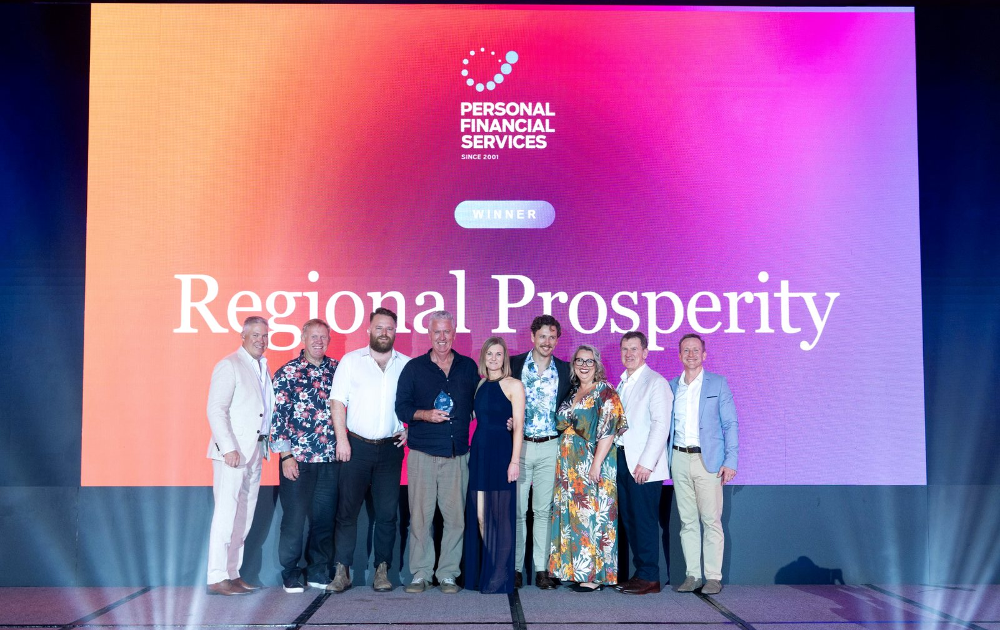

01 · The challenge
Good advice starts with people. Preparing it starts with information.
For Regional Prosperity Financial Advice, the purpose of technology comes back to the people it serves. The firm helps regional people, families and communities, with approximately 20 full-time team members across Colac, Hamilton, Geelong, Warrnambool and Queenscliff.

In 2026, Personal Financial Services named Regional Prosperity its Practice of the Year (3+ Advisers) at the PFS Awards. That recognition is context for the firm and its work; this story is about its separate experience of adopting Bunya. Read PFS’s award announcement ↗
Behind the client conversations was a familiar administrative challenge. Documents were organised by adviser, with separate folders for clients, prospects and archived records. Correspondence and advice preparation sat across different parts of the workflow. Bringing it all together meant manual collation and editing in Word, Excel and reports from Xplan.
Kane Leersen, Organisation Leader & Personal Financial Adviser, wanted that information to become easier to use. The aim was a more automated advice process, including consistent, evidenced comparison work across superannuation, pensions and platforms.
“The aim is to give advisers more time with clients, without losing the checks that good advice requires.”